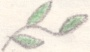

Тёмный лес
N22
* * *
Тёмный лес стоит кругом.
На опушке домик.
И живёт в домишке том
Симпатичный гномик.
Возвращаясь вечерком,
Скажет: "Спите, Солнце!"
И засветит светлячком
В темноте оконце.
Свет в оконышке горит,
В гости приглашая.
Посидим-поговорим,
Угощу вас чаем.
Песня, смех, улыбка, шутка
Для друзей найдутся,
И исчезнет за дверями
Темнотища жуткая.

1
Хочу я о многом тебе рассказать.
Ты слушать умеешь - мне нравится это.
Не каждому просто - уметь промолчать,
Суметь промолчать так всю ночь до рассвета.
Но ночь коротка, вот и солнце взошло.
Мы молча сидим, прислонившись друг к другу.
Я руку твою в полумраке нашёл,
Ты молча пожала в ответ мою руку.
Мы словно в тумане с тобой, в забытьи...
Вдруг что-то случилось в мгновение это,
И свет твоих глаз отразился в моих.
Но ночь коротка. И не надо ответа.
2
Сигаретный дым курится.
Ветер стонет за окном.
Иль опять мне это снится? -
Скатерть залита вином.
Под столом бутылки с пивом,
Водка выпита до дна,
И гитарная, с надрывом,
Басом лопнула струна.
Сядь со мною, дорогая,
Обниму одной рукой.
Мне другой такой не надо
И тебе никто другой.
Я тебя совсем не знаю.
А зачем мне это знать?
С полуслова понимаю -
Больше нечего сказать.
Так налей же поскорее
Водки, браги иль вина.
И пускай ещё звучнее
Басом хлюпает струна.
3
Послушай, будь со мной на ты.
Скажи мне, не солги -
Отравлены ли все цветы.
Что дарят нам враги?
И что такое клевета?
Что истина в вине?
Скажи, ни слова не тая,
Открой, доверься мне.
И можно ль подлость излечить.
Как от болезни злой?
Ответь мне, только не молчи,
Я слушаю, друг мой.
Но ты молчишь, потупя взгляд;
Не будешь отвечать?
Иль хочешь повернуть назад
И просто промолчать?
Смотрю в глаза - всё как в реке,
Вода чиста, дрожит.
И где-то в самой глубине
Там истина лежит.
Так вот ты притаилась где!
Уйди, меня не трожь?!
Без всякой суеты на дне
В сыром тепле живёшь.
И я зову - всплыви скорей.
Нужна ты позарез!
Но гладь чиста. Куда там ей!
Болото. Нет чудес.
4
Я провожаю старый год,
Сижу один и пью.
Бутылка кончилась и вот
Другую достаю.
За стенкой хохот, шум и смех.
Там радость, но не грусть.
Опять один, плевать на всех,
Так было, ну и пусть!
А вдруг так будет в Новый год?
Не знаю, что тогда.
А впрочем, всё это пройдёт -
Такая ерунда.
Подумай, разве ты не прав?
Пройдёт, а, может, нет?
Достань ещё, портвейна грав
Поможет дать ответ.
Вино, вино, как многих ты
Спасаешь в трудный час.
У всех нас разные мечты.
Конец один у нас.
Но почему один исход?
Ведь выход где-то есть?
Но не решить мне сей кроссворд,
Там граф не перечесть.
Там есть ответ под словом "код" -
Найди графу свою.
Я провожаю старый год -
Сижу один и пью.
5
И вот я снова из себя
Вытягиваю жилы.
Тебя любя и не любя,
Шепчу: мы живы, живы.
Ну что так медленно течёт
Всё знающее время.
Ползу за ним. Наоборот -
Вот тема к размышленью.
Кляну его: скорей, скорей,
А сам, упёршись пяткой
Застыл сегодня у дверей
Невиданной загадки.
6
Ну и жизнь пошла с тех пор!
А давно ли это,
Как расстались мы с тобой,
Хижина поэта?
На избушку не похожа,
Не соломой крыта.
Не дворец, но всё же
Будешь не забыта.
Сколько их в тебе осталось,
Мыслей и сомнений?
Поделись со мною малость
Частью размышлений.
Дай мне формуву такую -
Кто же её знает? -
Чтобы каждый мог кривую
Прямо в цель направить.
Да и цель не ту, что рядом -
В самую десятку.
Формулу такую надо,
Чтобы по порядку.
Где, когда и что мне делать?
Жду ответа, слышишь?
Зашатались в доме стены,
Трещины на крыше.
Всё плывёт перед глазами,
Всё перекосилось.
Прямо на голову Сане
Формула свалилась.
Под такой тяжёлой ношей
Саша зашатался.
Верный друг лафанца Лёши
Так там и остался.
Там теперь течёт ручей,
Памятник гранитный.
Пусть его отец Андрей
Помянёт в молитве.
7
Жизнь - это сложная штука.
Кто бы подумать мог? -
В счастье другому порукой,
Спутником стать бы ты смог?
Ты головой качаеж.,
Зябко кутаясь в плед.
Ты пожимаешь плечами:
Смог бы... а, может быть, нет?
И смотришь в глаза, вопрошая:
Сможешь? - ответь мне - Да!
Мы будем вместе до края.
Мы вместе будем всегда.
Скажи, ты этого хочешь?
Глаза твои не солгут.
И губы в ответ бормочут:
Смогу... если смогу.
8
Воспоминания опять
Меня уносят далеко.
И время повернуло вспять,
И на душе опять легко.
Луна в тот вечер, как всегда,
Смотрела будто бы в стекло.
Давно ль то было и когда
Всё это в Лету утекло.
Курил, глядел в огонь костра
Я думал, думал и мечтал,
Ведь знал, что это всё мура,
Но продолжал и продолжал.
Хотел чего - не знаю сам,
Смотреть хотел и слушать смех.
Чтоб это было только нам
И не хватало бы на всех.
Наверно, прошлое всегда
Нас будет чем-то привлекать,
И будем клясться никогда
Не забывать, не забывать.
9
Тебе, наверно, всё равно -
С тобой я буду или нет,
Торчу ли вечно под окном
Или давно пропал мой след.
Но верь - всегда в моём краю
Все мысли только о тебе.
За жизнь и за любовь свою
Я низко кланяюсь судьбе.
Прости меня - я был неправ,
Когда считал тебя другой.
Сегодня, всё переиграв,
Решил навечно быть с тобой!
10
Вот ты опять сегодня не пришла.
Как часто верим мы своей судьбе.
Сижу один, как прежде, у стола
И думаю, конечно, о тебе.
Наверно, есть на свете и судьба
Фортуна и ещё чёрт знает что.
Но чем я прогневил её тогда,
За что наказываешь так меня, за что?
А можно ль это карою назвать?
Ведь жизнь перевернулась кверху дном.
С тех пор, как начал это сознавать
Прошу тебя лишь только об одном.
На жертвенный огонь своей любви.
Не зная страха, принеси себя.
Забудь, что пламя весело горит,
Поленья, словно руки, теребя.
Забудь себя, отдайся чувству вся
И будь тверда в решении своём.
Тогда нам всё на свете ерунда,
Ведь вместе мы с тобой. Всегда вдвоём.
Вдвоём идти по берегу реки,
Зажав твою ладонь в руке своей,
Купаться в море, слушать шум тайги
И сознавать, что нет тебя родней.
Хочу любимой я тебя назвать.
Ведь это счастье быть твоей судьбой.
Тебя своей судьбою сознавать,
Не думая ни о какой другой.
И пусть сегодня нет тебя со мной,
Я знаю - ждёшь и так же веришь ты.
Что сбудется загаданное мной
И воплотятся в жизнь твои мечты.
Так почему сегодня не пришла?
Все мои мысли лишь с тобой одной,
Сижу один, как прежде, у стола,
И всё-таки доволен я судьбой.
█
* * *
Когда ко мне приходит друг
И протекают наши встречи,
Со страхом замечаю вдруг.
Что иссякают мои речи.
Но вот уходит друг опять,
И опускает ночь покровы.
Тогда мне хочется кричать
От недосказанного слова.
█
* * *
Копал сквозь небо, землю и песок.
Постиг Вселенной потаённый сок,
В гранит, на коем всё стоит, вгрызался,
Но дна картонного достичь не смог.
* * *
Устал брести неведомо куда.
Едва горит последняя звезда.
Настанет отдых. И года ненастья
Ты вспомнишь с благодарностью тогда.
* * *
Мир многолик, прекрасен и велик.
А я посыпал пеплом свой парик,
В уютной прочно запертой квартире
Блевать стихами мудрыми привык.
* * *
Чтоб от безделья мхом не зарасти
Колодцу мудрости в моей горсти.
Пишу стихи. Я искренне стараюсь,
Но не про то они - уж ты прости.
* * *
Жизнь - это чаша сладкого вина
Хватай и поскорее пей до дна.
Будь зорок, с кулаками наготове;
Не то считай, отобрана она.
* * *
Жизнь - это путь сквозь холод и метель.
Поспать - твоя единственная цель.
Но стоит задремать хоть на минуту -
Найдёшь в сугробе гроб, а не постель.
* * *
Жизнь - это бег на месте, но спешить
Обязан ты, чтоб заживо не сгнить.
Умрёт в тоске, кто понял: нет движенья.
Уж лучше век в неведеньи прожить.
* * *
Жизнь - это бег на месте. Раз-два-три...
Но если остановишься - смотри -
Засохнешь на корню без моциона,
ТЫ создан бегать - что ни говори.
* * *
Жизнь - это бег на месте. Счастлив тот.
Кто этого до смерти не поймёт.
Кто не наказан разумом и зреньем,
КТо озабоченно спешит вперёд.
* * *
Смерть - это отдых от земных сует,
Спокойный сон - бессонницы там нет.
Так почеьму же мы боимся смерти?
Так нас задумал Бог - и весь ответ.
* * *
Понявшим, что движенье - суета,
Безволье - это худшая беда.
Бездельники гниют живьём - я знаю -
Но это слабый стимул для труда.
* * *
Спросил я мудреца: зачем мы есть?
Мудрец ответил: чтобы жизнь разнесть
На ближние и дальние планеты.
Чтоб как Земле, Галактике расцвесть.
* * *
Жизнь - что растение, мы - что цветок.
Цветок увянет - час наш недалёк,
Но семена-ракеты разлетятся,
И новый где-нибудь взойдёт росток.
* * *
Отец о кладе сыну рассказал
И унер. Тот весь двор перекопал,
Но не нашёл, и посадил картофель.
Вот так и Бог привычки в нас создал.
* * *
Я утром встал с постели - а зачем?
Из дома вышел, сел в метро - зачем?
Весь день до вечера просуетился -
Зачем? Нет, почему, а не зачем?
* * *
Читаю... Трудно всё это понять...
Не хочет автор мне помочь понять...
Не для того ли он писал-старался,
Чтобы отбить желание понять?
* * *
Известно нам, что ложь большое зло.
Однако, это наше ремесло.
Есть компромисс возможный - полуправда.
Но лжи она опасней раз во сто.
* * *
Уж лучше вовсе в руки книг не брать,
Чем дрянь читать, а после ей рыгать.
А вообще-то, что такое книги?
Они - реальной жизни суррогат.
* * *
Ты "рубаёв" помногу не читай.
Прочёл одно - часок поразмышляй.
На всё уйдут какие-нибудь сутки,
А мудрости бесценен урожай.
* * *
То, что меня наказывает Бог,
Доказывает: существует Бог,
Доказывает: обо мне он помнит.
Что лучше может быть: со мною Бог!
* * *
Я утром встал, куда-ьто побежал,
Что сильно занят, я воображал.
Зачем? - затем, что жизнь есть бег на месте:
Тот счастлив, кто бежит, как на пожар.
* * *
Встал я с постели утром - а зачем?
Ждал меня вкусный завтрак - вот зачем!
Всему, что делаю я, есть причина,
И нечего твердить: зачем, зачем.
* * *
Есть силы для борьбы и для труда -
В движеньи видишь жизни смысл тогда.
Потом придут болезни и усталость,
И вдруг поймёшь: движенье - суета.
* * *
Понять мы можем сами ДА иль НЕТ.
МЫ мыслим, в нас нельзя вдолбить ответ.
Однако, вдалбливают в нас вопросы,
Мешая нападать на верный след.
* * *
Ах, как мы можем - как же этот хлам
Поработил меня - служить вещам,
Да, как мы можем жрать и рожи корчить.
А там, не так уж далеко, Вьетнам.
* * *
Дано мне есть и сколько влезет спать,
Дано гулять и языком болтать.
Короче, я живу другим на зависть.
Но для чего? - я не могу понять.
* * *
Голодному еда всего важней.
Свобода - для тоскующих по ней.
А я хожу и сытый, и свободный,
И говорю: всего важнее цель.
* * *
Голодный посмеётся надо мной.
Прав тот, кто посмеётся надо мной.
Но я скажу: мне скучно жить в бездельи
И пусть смеются люди надо мной.
* * *
Без Бога и без цели я брожу...
Что цель - я и забот не нахожу...
Но труд людей порою в гроб вгоняет.
Чего же я-бездельник - всё брюзжу
* * *
Философов я вижу долгий ряд,
Из разных лиц составлен сей парад.
Одни умеют только МАТЕриться,
Другие же И ДЕло говорят.
* * *
Всё тщетней я понять пытаюсь мир,
В руках летуча мудрость, как эфир.
Ну а когда я что-то понимаю,
То надуваюсь важный, как пузырь.
* * *
Когда нам батареи отключат,
И сахара, и молока лишат,
Когда заставят целый день работать -
Тогда узнаем, что такое ад.
* * *
Всем надо мяса по полтонны дать,
По телевизору цветному дать...
Но неужели кто-то полагает,
Что от того счастливей можно стать?
* * *
Я с озабоченным лицом бродил,
Как будто что-то делал, как-то жил.
Потом остановился постепенно.
Но сыт по-прежнему я, как и был.
* * *
Чтобы себя к движенью побудить,
Нам суетные цели возводить
На пьедестал приходится. Но разве
Никак нельзя без этого прожить?
* * *
Что может быть прекрасней, чем дышать?
Что может быть приятней, чем дышать?
О, люди, перестаньте суетиться
И радуйтесь, что можете дышать.
* * *
Не сотвори кумира. Я стою.
Жду. Нет его, и нет, и нет. Свою
Троллейбусу молитву посылаю.
Чтобы проехать, душу продаю.
█
НЕ БЕГИ
Не беги от судьбы,
Не беги никогда
Сколь бы тяжкой она ни была.
Не беги от судьбы,
Не сбежишь никуда.
Знать, такими нас мать родила.
Не беги от любви,
Не беги никуда.
Сколь далёко бы ты ни ушёл.
Знай, что слёзы
Ведь это не просто вода,
Это горя солёный рассол.
Не беги от себя,
Всё равно не сбежишь,
Где бы ни был - себя найдёшь.
Хоть ты в воду нырнёшь,
На Луну улетишь,
Всё равно от себя не уйдёшь.
Не беги от людей,
Пожалеешь потом.
Горько будет без них тебе.
И, прокляв сто чертей,
Заскорбишь об одном,
Как добиться прощенья себе.
А.Б.
РАЗГОВОР ВЛЮБЛЕННЫХ
Для нас с тобой - цветы растут,
Для нас с тобой - заря встаёт.
Для нас с тобой - часы идут
И нам с тобой - скворец поёт.
Для нас с тобой - весь мир стоит.
Для нас с тобой - сады цветут.
Для нас с тобой - журавль летит
И нам с тобой - везде приют.
Для нас с тобой - огонь горит,
Для нас с тобой - везде тепло,
Для нас с тобой - наш вальс звучит
И нам с тобой - всегда везло.
Для нас с тобой - падёт звезда,
Для нас с тобой - весь солнца свет,
Для нас с тобой - есть слово "Да"
И нам с тобой один ответ.
Для нас с тобой - любовь цветёт,
Для нас с тобой - черёмух цвет,
Для нас с тобой - любовь придёт
И нам с тобой - не скажет "Нет".
Для нас с тобой - сейчас весна.
Для нас с тобой - один лишь путь,
Для нас с тобой - вся жизнь ясна
И нас с тобой - не обмануть.
А.Б.
МОНАХ
Воспоминанья, отойдите!
Лишь только сладостью греха
Влечёт нас эта нить событий,
Вся эта прошлая труха...
И вспоминается, как втайне
Взглянул тогда в тот первый раз
И взгляд ответный, неслучайный,
И огонёк при встрече глаз,
И то, как часто мы встречались,
И то, как месяцы шли, шли,
А мы - смешно звучит - общались,
Мы подружиться не смогли...
И то, как в зале раздавался
Мой первый вальс, а я мрачнел
И вообще сбежал от вальса
Лишь потому, что не умел,
И то, как села на ступени
У низких каменных перил,
И голову я на колени
Тебе тогда, не положил,
И то, как... Память, сжалься! Сжалься!
Зачем тогда при свете звёзд
К твоей груди я не прижался
Под соловьиный перехлёст!
И вот живу забыто, постно.
Не зная даже адрес твой...
Зачем я так легко и просто
Расстался навсегда с тобой?
Лишь на единое мгновенье
Я утонул в твоих глазах
И тут же взгляд отвёл в смущеньи,
И отошёл. Зачем? Монах!
Монах! Монах! Ты пленник страха.
Прощай, минувшее, прощай!
И келью старого монаха
В его ночи не посещай.
█
ЧАЙ
Не проповедуй алкогольных пыток.
Из песен пафос винный исключай.
Да будет чай! Божественный напиток,
Невинный чай. большой и добрый чай!
И кто б ты ни был: вечный неудачник,
Распределенья ждущий выпускник,
Районный фельдшер, захандривший дачник
Иль вообще учитель с пачкой книг
Не возноси судьбы своей плачевность
И пей с друзьями щедрый эликсир.
Дарует он беседе - задушевность
Душе - покой, больному горлу - мир.
Лишь только солнце сходит с небосклона,
Он манит нас вскипевшим говорком,
И желтоватым серпиком лимона,
И седоватым вьющимся парком.
Среди хлебов, среди конфетных горок
Он царствует, учитель, друг и врач.
И сладок он, и, если нужно, горек,
И, если нужно, крепок и горяч;
И, если нужно, он в душе холодной
Угасшие мечты разгорячит,
И ты воспрянешь, и в груди свободной
Взволнованное сердце застучит.
И ты поймёшь, и ты полюбишь друга
За искренность, за мысль и за полёт,
И вырвешься из суетного круга,
И всё в тебе от счастья запоёт.
ТЫ кинешься кому-нибудь на помощь,
Ты маленький затеплишь огонёк,
И кто-нибудь, почти погибший в полночь,
Почувствует, что он не одинок.
Но если ты увидишь чью-то грешность
И, вскипятившись, крикнешь: бей их, бей -
Погасит чай чрезмерную поспешность:
Сперва подуй - и только после - пей.
Люблю я эти тихие беседы
За скромным, за непраздничным столом,
И споры, и расспросы, и советы,
И искренность, и искренность во всём.
Ах, люди, перестаньте суетиться!
Куда вы мчитесь, тяжко так сопя?
Попробуйте хоть раз остановиться
И с удивленьем выслушать - себя.
Весь день вы честно отданы работе,
Но вечером прислушайтесь к себе.
Зачем живёте? Для кого живёте?
И о такой мечтали вы судьбе?
И вы такую в жизни ждали радость?
И вы такого жаждали труда?
И вы осознаете смысл и краткость
Всей этой жизни, мчащейся всегда?
И если вы бесстрашный враг холопства,
Ревнитель лучших помыслов людских
И, презирая лишние удобства,
Всю жизнь куёте радость для других,
Смущает ли вас то, что у кого-то
По трёхэтажной даче, а у вас
Ни дачи, ни машины - лишь работа
И чистое сиянье честных глаз?
Однако, мы накал стиха умерим
И кипятильник выключим в душе.
А то мы ищем, пишем, спорим, верим.
А нас никто не слушает уже.
Теперь я вас пореже навещаю,
С Урала к вам на чай не забегу.
Но не отчаиваюсь, печку вычищаю
И чайник мой зелёный берегу.
Затапливая и рассвет встречая,
Я в термос наливаю чай с утра
И, отработав день, за кружкой чая
Спокойно коротаю вечера.
Меня не тянут шумнные попойки.
Ведь там, где по ночам и гром, и свет,
Где все так беззастенчивы, так бойки,
Ни дружбы, ни любви на деле нет.
Письмо от друга - лучший собеседник
Когда не чай в округе господин,
И я, как чайной жизни проповедник,
В субботу за столом сижу один.
Но благодарен я судьбе и чаю
И благодарен каждому письму,
И если на письмо я отвечаю,
То мне не одиноко одному.
Я славлю в письмах-песнях чаепитье,
Я славлю тех, кто чаем нас поит,
И повторяю снова, как открытье,
Банальнейшую истину:
Пиит!
Не проповедуй алкогольных пыток,
Из песен пафос винный исключай.
Да будет чай! Божественный напиток.
Невинный чай, большой и добрый чай!
Да будут наши тихие беседы
За скромным, за непраздничным столом:
И споры, и расспросы, и советы,
И искренность, и искренность во всём.
█
Последнее изменение страницы 1 Jul 2019
ПОДЕЛИТЬСЯ: